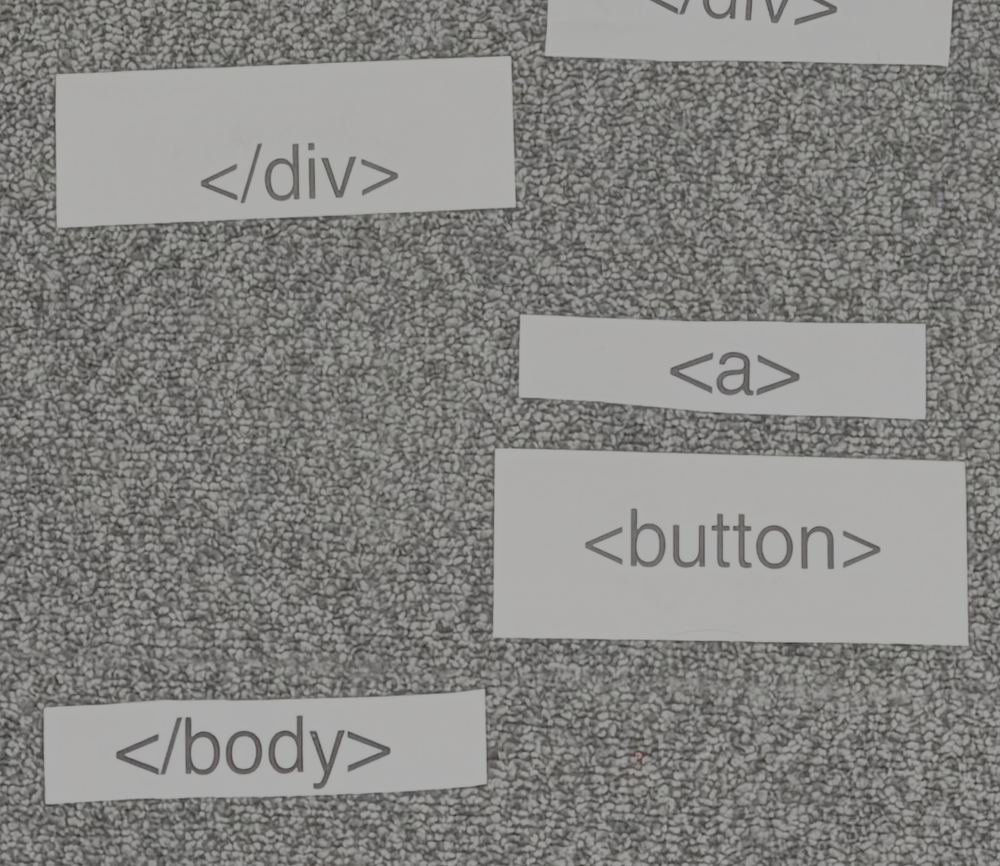

back
In Week 2's studio, we played an activity of HTML TAG: A relay race to build a simple html structure of an drawn wireframe site. From the get-go, this activity seemed simple, but it quickly devolved into a mess of communication between the group to figure out the right structure. I feel that using software like Vs studio code can really be taken for granted.